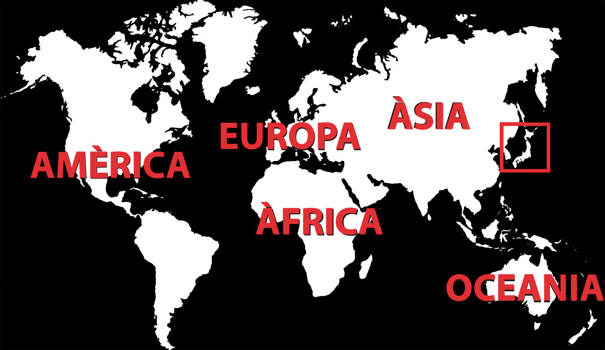
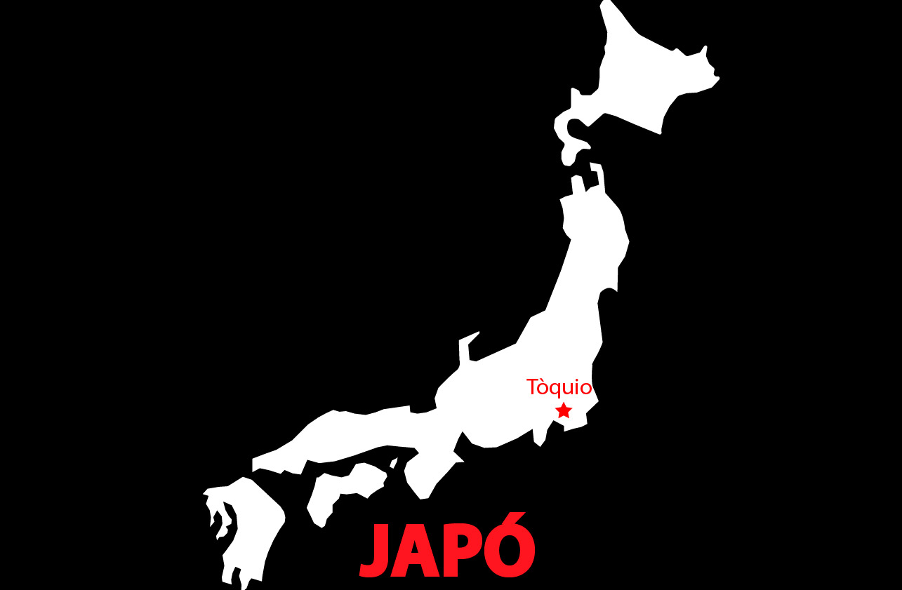

Tòquio
Tòquio és la capital japonesa, està dividida en dues àrees principals: la continental i la insular. L'àrea continental està localitzada en el marge nord-oest de la badia de Tòquio i està enclavada al centre-oest de l'illa de Profund o Honshu, formant part de la regió de Kanto.
Curiositats
1) Els japonesos són extremadament silenciosos.
2) Sens dubte un dels grans contrastos que s'aprecien a Tòquio (i en tot Japó) són les lleis respecte al tabac.
3) Són extremadament ordenats.
4) Hi ha bars amb lloguers de gossos i gats.
5) En Japó la cosmètica és un punt fort, per això les japoneses van molt arreglades.
6) Els banys japonesos incorporen lectors de targeta i fins i tot pantalles per poder escoltar la teva pròpia música o veure fotografies.
7) Al contrari que en altres països, els rodamons japonesos viuen al carrer però no demanen diners i són totalment pacífics.
8) Japó és el país de les màquines expenedores. I el preu dels articles sempre és el mateix.
Tòquio, és la capital de Japó
On està Japó?

Japó:

Tòquio està dividida per dues àrees principals: la continental i la insular.
L'àrea continental
Està localitzada en el marge nord-oest de la badia de Tòquio i està enclavada al centre-oest de l'illa de Profund o Honshu, formant part de la regió de Kanto.
L'àrea insular
Abasta dues cadenes d'illes en l'oceà Pacífic, al sud: les illes Izu, que recorren de manera paral·lela a la península de Izu, en la prefectura de Shizuoka, i les illes Ogasawara que es troben a més de mil quilòmetres de l'àrea continental de Tòquio. Tòquio inclou llacs, rius, preses, granges i parcs nacionals, a més de les estructures que han estat construïdes per l'home. Tòquio es parteix també de l'Àrea del Gran Tòquio, que inclou les prefectures de Kanagawa, Saitama i Chiba.
Dintre de Tòquio hi ha...
Documentació necessària per anar a Japó
Per visitar Japó tan sols es necessita tenir un passaport amb una validesa suficient per a l'estada total al país i un bitllet d'anada i tornada.
Estades de fins a 3 mesos
Espanya, Andorra, Argentina, Austràlia, Bahames, Barbados, Bèlgica, Bulgària, Canadà, Xile, Costa Rica, Croàcia, Xipre, Dinamarca, Eslovàquia, Eslovènia, Estats Units, Estònia, El Salvador, Finlàndia, França, Grècia, Guatemala, Hondures, Islàndia, Israel, Itàlia, Lesotho, Letònia, Lituània, Luxemburg, Macedònia, Malta, Maurici, Mònaco, Noruega, Nova Zelanda, Països Baixos, Portugal, Polònia, República Txeca, República Dominicana, San Marino, Singapur, Surinam, Suècia, Tunísia, Turquia i Uruguai.
Estades de fins a 6 mesos
Altres Països
Per obtenir el visat, el millor és acudir a l'ambaixada o al consolat japonès del seu país d'origen amb els següents documents:
-Passaport
-Dues fotos
-Dos formularis d'entrada (disponibles en l'ambaixada o el consolat)
-Document que certifiqui el propòsit de la visita
Idioma
L'idioma oficial i l'únic parlat per gran part de la població, és el japonès. Si voleu trobar a algú que parli anglès, com més jove, millor, encara que no és cap garantia d'èxit.
Al problema del japonès parlat se suma el de l'idioma escrit. A Japó coexisteixen tres alfabets diferents: kanji, hiragana i katakana. A aquests tres se suma el Romaji, que és la representació del japonès amb caràcters llatins.
La moneda japonesa

La moneda oficial de Japó és el ien (¥, JPY). A Japó circulen monedes d'1, 5, 10, 50, 100 i 500 iens, i bitllets de 1.000, 2.000, 5.000 i 10.000 iens.